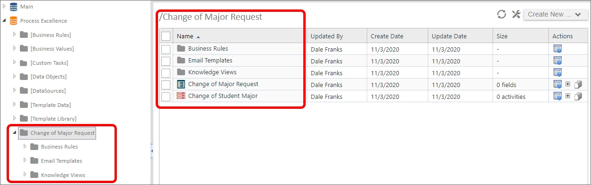

The Development Stage is where you'll perform the technical work of building the application that conforms to the specifications you've gathered and documented.
Structuring your folders properly makes it easier to deploy individual projects or implementations. The best practice for structuring folders is to create a single parent folder to contain the entire application, and to include subfolders for various content list object types. For instance, look at the sample structure below.
Our Change of Major application is contained in a parent folder, named Change of Major Request. Inside this folder are subfolders for storing other application objects.

The image above is an example of structuring an implementation project logically. The top-level folder provides the name of the process you are modeling. All the individual Forms, Knowledge Views, etc. are organized into the lower-level folders. With this type of organization, any changes you make to the process are contained inside this folder structure, which allows you to simply export the Change of Major Request folder from your development server, and import it into production, with all of its content list objects intact, and without having to worry about interfering with any other project.
There are, of course, some exceptions to project/process-based organization. For instance, shared objects, like Datasources, Goals, and Business Values should probably each be grouped together in their own folder at the root level of the partition. You may have noticed that the Custom Tasks are organized in this fashion. These objects are considered "global" objects, which is to say that they can—and probably will be—used by many different applications.
Building an application usually requires that many different objects work together. For example, both a Form and Process Timeline might both require evaluation of data from a Business Value in a condition. This characteristic of many different objects working together is termed interoperability. Because each Process Director object can be so dependent on others to operate correctly, documenting the application's requirements in detail, as we discussed in the previous lesson, becomes even more important.
Since so many objects might be part of the interoperability between objects, it may not be possible to completely build one object at a time. A Form section might only be visible in a specific Timeline activity, while a timeline activity may not need to run if a Form field contains a specific value. Since both the form and timeline interoperate in this way, you won't be able to completely configure the form until the appropriate Process Timeline has been completed. Similarly, you won't be able to completely configure the Process Timeline until the Form field you are evaluating in the Timeline activity exists on the form. Documenting these required interactions ahead of time enables you to know how your objects will interoperate before you begin building them.
Now that you've gotten your application folders organized, the choice is up to you as to what objects you begin building first. Happily, there's no right or wrong way to begin, but there are a few things you might want to think about.
If your Form and Process Timeline use Business Rules or Business Values, you may wish to build those objects first so that, when you get to the point of building the Form or Process Timeline to incorporate them, they already exist.
Alternatively, since the Form is often the most complex and time-consuming object to build, you may wish to start with the Form, to configure how the Form fields are organized, and how the form will look. Similarly, you may wish to start with the Process Timeline to ensure that the process is mapped out before creating the form.
The good news is that there is no right or wrong way to start building the application objects.
Also, since both Knowledge Views and Email Templates almost always require either Form or Process Timeline information—or both—to operate correctly, you can safely create those objects last.
When developing applications, there are several Best Practices that we recommend. Please refer to the Best Practices documentation topic for the full list of recommendations. While all of them may not be appropriate for every application, consider implementing them where you can.
While you may have a formal testing stage once the application is complete, you should be constantly testing the application during development. This testing should take place at the object level, as well as the application level.
At the object level, special attention should be paid to forms, for a couple of reasons. First, they tend to be the most complex objects in an application. So, you should ensure that the data you present from external sources is correct, visibility and enabling settings and conditions work properly, data is saved in the proper format, and all other form operations run correctly. Second, Forms are the primary user interface available to the users for interacting with the application. If the form doesn't work correctly, efficiently, and conveniently for the end user, their experience with the application will be unfavorable.
At the application level, you need to ensure that the Process Timeline runs correctly, Start When and Needed When conditions are applied properly, and that interactions between the Form, Process Timeline, and other objects run correctly.
Your testing during development needs to be comprehensive enough to ensure that, when the application is released to end users and the customers in the testing stage, all obvious errors have been corrected.
Continue to the Testing Stage of the application development process.